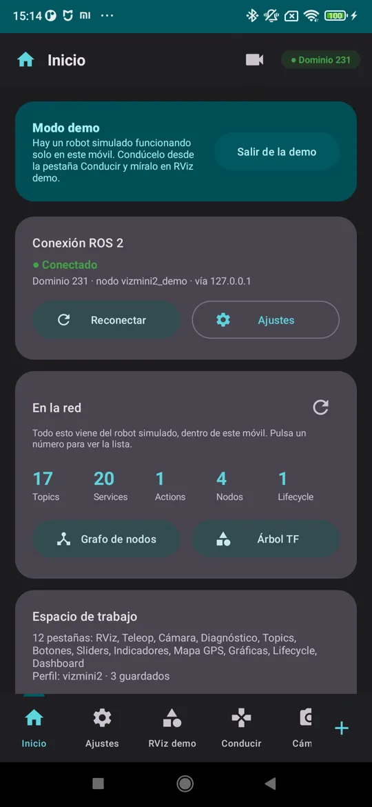

Instalación
VizMini2 funciona en móviles y tablets Android (Android 8.0 o superior) y en PCs con Linux (Ubuntu 20.04 o posterior) o Windows (10 u 11). Esta página trata del móvil; para el PC mira La app de PC.
En el móvil

La misma app, de dos formas:
Desde Google Play (lo más fácil): instala VizMini2 desde Google Play. Se actualiza sola.
Como APK, desde la página de versiones del proyecto: para móviles sin Google Play, o para tener una versión antes de que llegue a la tienda.
En el móvil, descarga
VizMini2-<versión>-universal.apk(sirve para cualquier móvil; elarm64-v8aes más pequeño y vale para casi todos los móviles recientes).Ábrelo. Si Android lo pide, permite instalar apps desde ese origen (el navegador o el gestor de archivos).
Elige una de las dos y quédate con ella: cada una se actualiza desde donde vino (mira Actualizar más abajo).
Abre VizMini2. Se abre en Inicio, sin necesidad de cuenta; la primera vez, un recorrido rápido te enseña lo básico.
Nota
El móvil y el robot tienen que estar en la misma red (o alcanzarse por una VPN o un Discovery Server) para que la app vea el robot. La demo funciona en cualquier sitio: nunca sale del móvil.
La app pide poco: permiso para mostrar notificaciones (alertas y la conexión en segundo plano) y, cada vez que grabas la pantalla, el aviso de captura de pantalla de Android.
En el PC
La app de escritorio tiene las mismas pestañas. De la misma
página de versiones: en Ubuntu el vizmini2_1.0.0_amd64.deb (sudo apt install ./vizmini2_*_amd64.deb)
o el .tar.gz; en Windows el .msi (para tu usuario, sin necesidad de administrador) o el
.zip. En Linux también se puede compilar desde el código fuente y ejecutar con
ros2 run vizmini2 vizmini2. Todos los detalles están en La app de PC.
Actualizar
Descarga el APK (o el .deb o el .msi) más reciente e instálalo encima del que tienes: se
conservan tus pestañas, tus perfiles y tus ajustes. Con el .tar.gz o el .zip, sustituye la
carpeta. El Registro de cambios recoge qué cambia en cada versión.
Nota
Si la instalaste desde Google Play, actualízala ahí: Google Play firma la app con su propia clave, así que un APK de la página de versiones no se puede instalar encima (ni al revés). Para pasar de uno a otro, desinstala antes; exporta tus pestañas o guarda un perfil para llevártelas.
Siguiente: Prueba la demo o Conectar con tu robot. La cuenta es opcional.